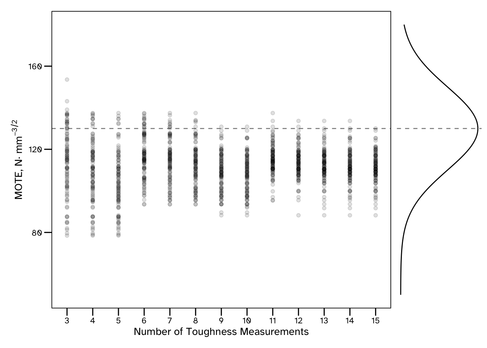
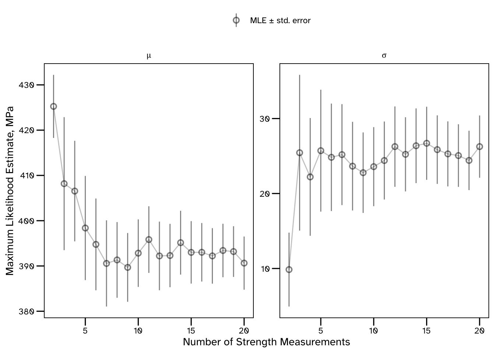
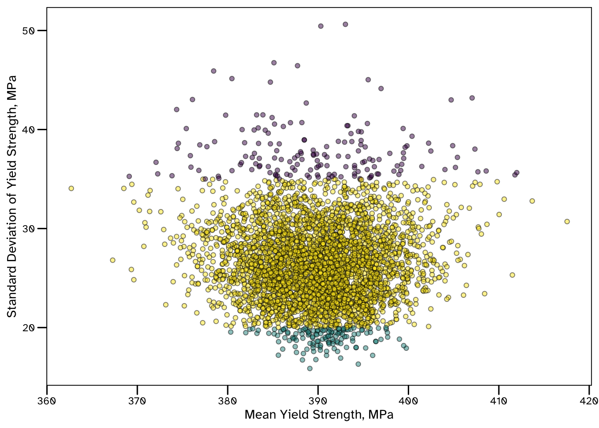
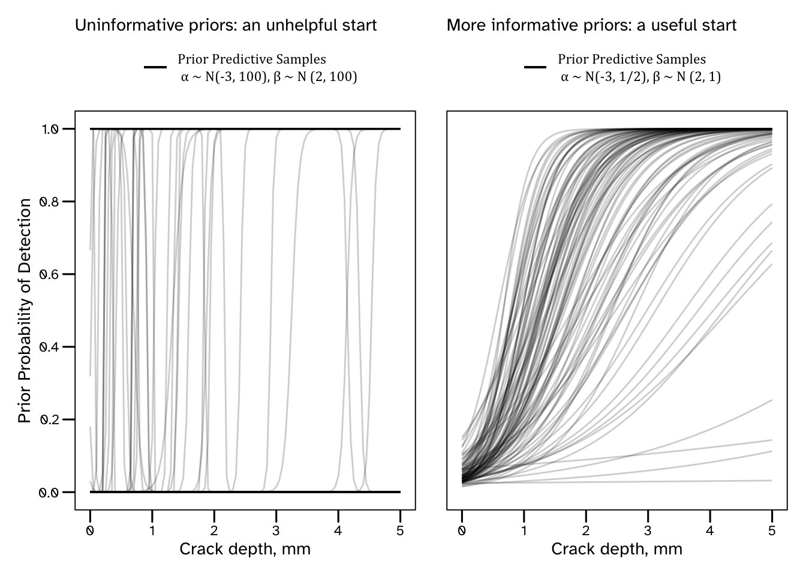
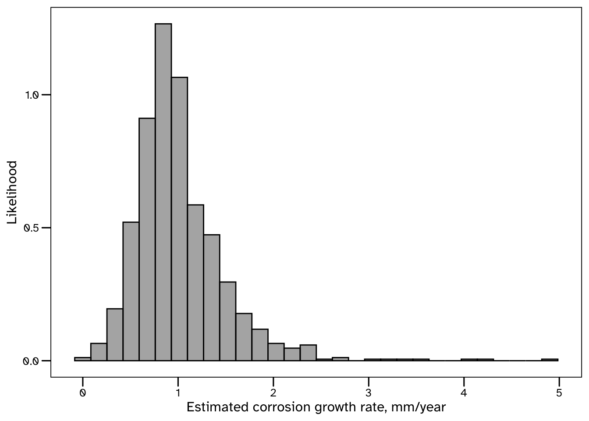
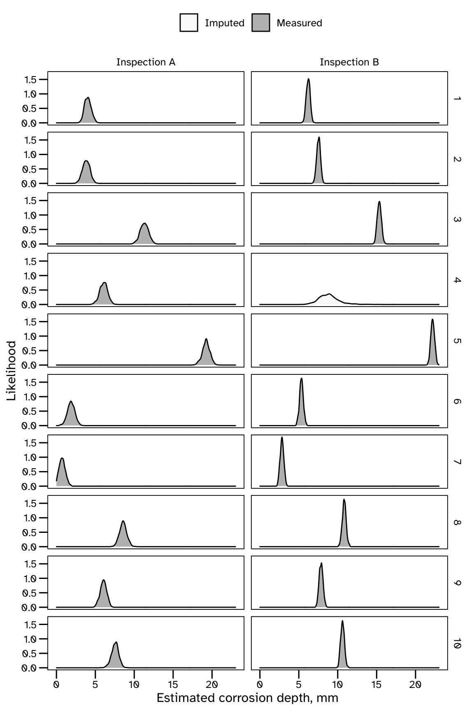

Code
import cmdstanpy, requests, os, multiprocessing, math
import numpy as np, pandas as pd
from scipy import statsGuidance on the Use of Probabilistic Methods for Identifying Data Requirements
The various new methods of collecting and analysing data that are increasingly available to engineers can contribute to improvements in the safety and efficiency of the built environment. However, understanding the quantity and quality of data required will continue to be a challenge to engineers. For instance:
The principles of data-centric engineering are not new. Engineers have always had to rely on empirical models that are supported by tests to demonstrate that systems are reliable and safe. However, given the recent advancements in the availability of free, open-source software tools for data analysis and statistical inference, there is an opportunity to improve engineering workflows. The guidance presented here is intended to be pragmatic and introductory. Example problems are presented alongside accompanying code implementations. There is a focus on answering meaningful questions, supporting decision making, and ensuring reproducible and reliable results.
Uncertainty accompanies our lives. Coherent modelling of uncertainties for decision-making is essential in engineering and related disciplines.
This is a computational document that includes chunks of Python, R, and Julia code necessary to analyse the data, and solve the decision problems in the various examples. To achieve this, various libraries/packages have been used, and these will need to be installed and loaded for the code to run.
import cmdstanpy, requests, os, multiprocessing, math
import numpy as np, pandas as pd
from scipy import statslibrary(tidyverse); library(fitdistrplus); library(boot)
library(cmdstanr); library(copula); library(ggthemes)
library(lhs); library(parallel); library(TruncatedNormal)using CSV, DataFrames, DataFramesMeta, Printf
using Random, Distributions, Bootstrap, Copulas, LatinHypercubeSampling
using JuMP, HiGHS, DecisionProgramming, Turing, LinearAlgebraIn R, Python and Julia packages first need to be installed. Guidance on installing packages can be found here (for R), here (for Python), and here for Julia.
Packages only need to be installed once (unless they are uninstalled), but then need to be loaded each time you want to make direct use of the functions or data they contain. This document will not detail the workings of each package, but such information can be found online, for example here is the website for the Python ‘pandas’ package.
In addition, some statistical models that have been written in the probabilistic programming language Stan have been used. The data used in the examples, as well as the code used for each exercise can be freely downloaded from this public Github repository.
Such calculations could also be performed using spreadsheet software. The primary reasons for not providing accompanying spreadsheet files to run the example calculations, are as follows:
Some notable examples of high consequence spreadsheet errors are recorded by the European Spreadsheet Risks Interest Group (EuSpRiG) and further discussion on the incompatibility of spreadsheets and good data management (in the context of research) can be found in a presentation from Monash University, here.
Engineering standards acknowledge the presence of variability in the quantities they are dealing with, but do not always provide guidance on how to apply models of variability, particularly in supporting decision making. For example, repeated strength tests of specimens from the same material, using the same machine, in the same lab will produce differing, (though hopefully similar) results. Any decision on whether a material is safe to use must therefore account for this variability somehow.
Historically, structural engineers have used deterministic approaches to perform conservative assessments. In this example a safe or characteristic value of strength may be taken, such as the minimum from a set of measurements. The premise of this approach is that, if the lowest measurement meets a requirement, then it is expected to be OK. These kind of heuristics do not tell us how many tests are needed to be confident that the lowest measurement is representative, since each new measurement provides an opportunity to find a new lowest strength. As a result, unquantified and implicit margins of conservatism are introduced, making it very difficult to find the best estimates of risk that are required to justify spending consistently and coherently.
This can be resolved by using probability to formally quantify uncertainty, and various examples of this are presented in this document. Statistical models of variability can describe how many uncertain quantities can be dependent, how uncertainty can increase when making predictions over various time frames, and how uncertainty can decrease when new data becomes available. Uncertainty quantification therefore allows for many other types of analysis, such as identifying where, when and how additional data should be collected, which is the focus of this document.
While data will generally always provide some value, provided that it is relevant, it will not always represent a good investment. There are various costs associated with collecting engineering data, including hiring/purchasing specialised measurement equipment, the storage costs of high-volume streaming data, and occasionally the risk associated with exposing personnel to hazardous environments to collect data. Justifying these costs require engineers to link data collection to the improved decision making that it facilitates.
Without formal methods of uncertainty quantification, engineers may differ in opinion about data collection strategy. Quantitative approaches will be preferable because they are auditable. As demonstrated in the examples in this document, these approaches do not remove engineering input from this process, but rather include expert knowledge in a formal way. Unless both available data, and subject matter expertise are used to inform decisions, then some information is not being taken advantage of.
As described in the below note, there are many appealing reasons to use probability to describe variability.
It has been proposed that since probability is the mathematical language of randomness, it should be used to model the uncertainties that arise (Gelman et al. 2014). Another compelling argument is that the practical meaning of probability is intuitive. Probabilities can be assigned to possible (uncertain) outcomes in decision problems.
Understanding how to estimate these probabilities as well as how to use them allows for coherent and replicable (auditable) decision making. The statistics presented in this document are with the intention of providing this kind of pragmatic guidance.
There are many established probability distributions, and some reasonable question regarding their application in engineering calculations, include:
One common method of visualising of the Normal distribution is using a Galton board. A number of beads hit a series of pegs as they fall to the base of the board. When they arrive at the base, they can be seen to approximate a Normal distribution. This can also be replicated using computer simulations, but in any case, it suggests that distribution functions are not arbitrary.
A similar example is presented in (McElreath 2020), where the author counts the number of possible arrangements of items that are hidden under buckets. Because there are more ways to hide these items evenly under the buckets, this is considered the most likely outcome (without any additional information). Running simulations (or other experiments) using this example will produce a Uniform distribution.
Both the Galton board and hidden items example show how a distribution can represent the most likely outcome of some event(s). They are said to be Maximum Entropy (MaxEnt) solutions for those problems. Using this principle is often recommended for deciding on a statistical model with very limited information about the problem (Jaynes 2003). Some mathematical proofs of various MaxEnt models are presented in (Jordaan 2005).
More generally though, engineers may need to impose some additional features and constrains in their models (to represent their knowledge of the system being analysed). Probability distributions can then be considered as helpful tools to represent uncertainty. Prior predictive checks (see Section X) can be used to ensure that the selected distribution are resulting in appropriate results on an intuitive outcome scale.
Modern programming languages have many functions for evaluating, integrating, sampling, and estimating parameters from probability distributions. The below examples show how \(10\) independent samples can be drawn from a normal distribution, with a mean value of \(0\) and a standard deviation of \(1\).
stats.norm.rvs(size = 10, loc = 0, scale = 1)array([ 0.92326814, 1.0350539 , 0.72822124, 1.07597249, -0.40602578,
1.21285018, 0.73978325, -0.22831955, -1.04289276, 0.70313327])rnorm(n = 10, mean = 0, sd = 1) [1] 0.08550655 0.60216297 -0.20969907 3.09873955 2.01296682 -1.04539500
[7] -0.89053424 -0.66653247 0.35001124 -0.56725525Normal(0, 1) |> x -> rand(x, 10)10-element Vector{Float64}:
-0.3560509440288681
0.40228723234550806
1.250173694709602
-1.9249661716080106
0.22724030538210024
-0.43157394172547486
0.17954092081473094
-0.25023253088333125
0.7843191528444862
-1.620585340878406Many more samples are typically required for them to be considered a sufficient characterisation of the distribution. Various variance reduction methods have been developed, so that sampling problems can be solved using fewer samples, therefore requiring less computational effort. These include importance sampling, and latin hypercube sampling, and examples of the latter are presented below.
def lhs(n_samples, dim = 1):
probs = stats.qmc.LatinHypercube(dim).random(n_samples)
return probs
stats.norm.ppf(lhs(10), loc = 0, scale = 1)array([[-1.08218068],
[-0.32658313],
[-0.11237304],
[ 0.19490564],
[-0.73193094],
[ 1.46998926],
[ 0.66308655],
[ 0.39172906],
[-2.18376289],
[ 1.04516428]])lhs <- function(n_samples, dim){
randomLHS(n = n_samples, k = dim)
}
(lhs(10, 1) |> qnorm(mean = 0, sd = 1))[,1] [1] -0.7559042 0.2730949 -0.3390298 0.1013449 -1.2123176 0.6225567
[7] -1.4653633 1.1133565 -0.1929787 1.9974250function draw_lhs(dist, n::Int)
samples = randomLHC(n + 2, 1) |>
x -> scaleLHC(x, [(0, 1)]) |>
x -> quantile(dist, x)[:,1] |>
x -> filter(!∈((-Inf, Inf)), x)
return samples
enddraw_lhs (generic function with 1 method)
draw_lhs(Normal(0, 1), 10)10-element Vector{Float64}:
-0.3487556955170447
0.3487556955170447
0.9084578685373853
0.11418529432142821
-0.11418529432142835
0.6045853465832374
-1.3351777361189363
1.3351777361189363
-0.6045853465832374
-0.9084578685373852Latin hypercube sampling ensures more evenly spaced samples than standard (inverse-transform, Monte Carlo sampling) (Olsson2003?). The effect of this is shown in in Figure 1.

Sampling from distributions converts mathematically challenging statistical problems to simpler data analysis problems. Consider the basic problem of structural reliability, where an engineer is tasked with identifying the probability of an uncertain load, \(L\), exceeding a components uncertain resistance, \(R\), to that load. This would represent the probability of the component failing, due to this load - a very important quantity for supporting inspection and maintenance decisions!
\[ \Pr(fail) = \Pr(L \geq R) \]
The probability of failure defined by the convolution integral, which only has analytical solutions for some simple examples:
\[ \Pr(L \geq R) = \int_{L \geq R} \int f(r, s) \; dr \; ds \]
Alternatively, the solution can be approximated by counting the number of samples from the load model that exceed samples from the resistance model. Each set of samples can be considered as a possible outcome (realisation) from the models, so the proportion of samples where the load exceeds the resistance therefore represents the probability of failure.
Using Python, R or Julia, it is now possible run millions of such simulations relatively quickly (though this will depend on the complexity of the load and resistance models), and this allows engineers to find solutions that could be difficult to obtain mathematically.
As a simple example, consider the series (or ‘weakest link’) arrangement of components in Figure 2.
graph LR
START[ ] --- A[Component 1]
A --- B[Component 2]
B --- C[Component 3]
C --- STOP[ ]
style START fill:#FFFFFF, stroke:#FFFFFF;
style STOP fill:#FFFFFF, stroke:#FFFFFF;
Such systems will fail when any of the components fail. If the below distributions describe the uncertainty in the applied loads and resistances, then it is possible the estimate the probability of failure by sampling from these distributions and evaluating the proportion of simulations associated with failure.
\[ R_{1} \sim Normal(\mu = 17, \sigma = 2) \]
\[ R_{2} \sim Normal(\mu = 16, \sigma = 3/2) \]
\[ R_{3} \sim LogNormal(log\mu = 2.7, log\sigma = 0.07) \]
# TBCset.seed(seed = 240819); n_samples <- 10^6
# TBCL = Normal(10, 2)
R₁ = Normal(17, 2); R₂ = Normal(16, 3/2); R₃ = LogNormal(2.70, 0.07)
prng = MersenneTwister(240819); n_samples = 10^6
β_df = DataFrame(R₁ = rand(prng, R₁, n_samples),
R₂ = rand(prng, R₂, n_samples),
R₃ = rand(prng, R₃, n_samples),
L = rand(prng, L, n_samples))
β_df.fail = (β_df.L .>= β_df.R₁) .| (β_df.L .>= β_df.R₂) .| (β_df.L .>= β_df.R₃)
pof = sum(β_df.fail) / n_samples0.023803In the above, the resistance parameters of the components are independent. This means that knowing that the resistance of Component A is relatively high, does not provide any information about the likely resistance of the other components. However, if the factors influencing the resistance were common, then a relatively high value for one component would suggest that a relatively high value for the other components were more likely. In such cases, this dependency should be accounted for in the probabilistic model.
One method for achieving this is to use copula functions (Hofert et al. 2022). There are various types of copula, but in each case they describe the dependency between the different constituent (marginal) components of a multi-variate probabilistic model.
Copulas can be used to model complex dependency, for example weakly dependent at relatively low values and highly dependent at relatively high values (or vice versa). In this case a Gaussian copula is used, which can only model linear dependency using correlation coefficients \(\rho\). Note that copulas (including Gaussian copulas) can be used to describe dependency between parameters, for any uni-variate (marginal) distributions. The resulting distribution may not be possible to define, and use in calculations, without copulas.
\[ \rho_{R_{1}, R_{2}} = 0.8 \]
\[ \rho_{R_{1}, R_{3}} = 0.6 \]
\[ \rho_{R_{1}, R_{2}} = 0.4 \]
# TBCset.seed(seed = 240819); n_samples <- 10^6
# TBCfunction convert_logsd(log_μ, log_σ)
σ = exp(log_μ + 1/2 * log_σ^2) * sqrt(exp(log_σ^2) - 1)
return(σ)
end
function convert_logmean(log_μ, log_σ)
μ = exp(log_μ + 1/2 * log_σ^2)
return(μ)
end
ρ₁₂ = 0.8; ρ₁₃ = 0.6; ρ₂₃ = 0.4
R₃_μ = convert_logmean(2.70, 0.07); R₃_σ = convert_logsd(2.70, 0.07)
Σ = [R₁.σ^2 ρ₁₂*R₁.σ*R₂.σ ρ₁₃*R₁.σ*R₃_σ
ρ₁₂*R₁.σ*R₂.σ R₂.σ^2 ρ₂₃*R₂.σ*R₃_σ
ρ₁₃*R₁.σ*R₃_σ ρ₂₃*R₂.σ*R₃_σ R₃_σ^2]
copula = GaussianCopula(Σ)
MVR = SklarDist(copula, (R₁, R₂, R₃))
prng = MersenneTwister(240819); n_samples = 10^6
mv_df = rand(prng, MVR, n_samples) |>
x -> transpose(x) |>
x -> DataFrame(x, ["R₁", "R₂", "R₃"])
pof = sum((β_df.L .>= mv_df.R₁) .| (β_df.L .>= mv_df.R₂) .| (β_df.L .>= mv_df.R₃)) / n_samples 0.019831Note that the probability of failure reduces when accounting for this dependency. Since failure is defined by the resistance of the components being lower than an applied load, ensuring that low resistances occur together result in fewer simulations that predict failure. Conversely, if multiple components were connected in parallel (where system failure requires all of the components to fail) increasing the dependency in the resistance properties increases the probability of failure as weak components occurring together is relatively more common with this model.
A comprehensive introduction to structural reliability methods is presented in (Melchers and Beck 2018). This book also includes some perceived challenges which are discussed later in this document.
So far this document has introduced the use of probabilistic models to describe uncertainty inherent to simple systems (sometimes called aleatory uncertainty). The second key source of uncertainty in engineering calculations is the statistical uncertainty associated with small, or otherwise imperfect datasets (sometimes called epistemic uncertainty).
This example considers how to interpret a set of measurements of material strength, accounting for statistical uncertainty. The data is presented in Table 1. This data can be downloaded using the below code, which also shows the first few rows.
strength_df = pd.read_csv(filepath_or_buffer = "data_files/strength_data.csv")
strength_df.head(n = 3) id yield tensile
0 1 415.394479 590.806283
1 2 435.102535 680.617608
2 3 374.046293 683.524267strength_df <- read_csv(file = "data_files/strength_data.csv")
strength_df |> head(n = 3)# A tibble: 3 × 3
id yield tensile
<dbl> <dbl> <dbl>
1 1 415. 591.
2 2 435. 681.
3 3 374. 684.strength_df = CSV.read("data_files/strength_data.csv", DataFrame)
first(strength_df, 3)3×3 DataFrame
Row │ id yield tensile
│ Int64 Float64 Float64
─────┼─────────────────────────
1 │ 1 415.394 590.806
2 │ 2 435.103 680.618
3 │ 3 374.046 683.524The results indicate some variability even though each row presents the result of the same test, using the same machine, on a tensile specimen from the same material. This variability can be attributed to:
Material heterogeneity. Manufacturing processes used to make structural steel results in local hard spots, laminations, inclusions and other anomalies that can locally influence the strength of the material. The presence of such anomalies in the microstructure of a testing specimen will influence the measured properties.
Imperfect measurement data. There is no manufacturing process that creates perfectly homogeneous steel, and there is no measurement of an engineering quantity that will tell us everything we want to know. In this example, the machine used to perform the tests will output results with some precision, which has been quantified by the manufacturers.
Shown here as a table:
| Test ID | Yield Strength, MPa | Tensile Strength, MPa |
|---|---|---|
| 1 | 415.3945 | 590.8063 |
| 2 | 435.1025 | 680.6176 |
| 3 | 374.0463 | 683.5243 |
| 4 | 401.6319 | 608.4174 |
| 5 | 365.7331 | 504.0710 |
| 6 | 376.6799 | 519.8186 |
| 7 | 365.3381 | 624.4340 |
| 8 | 396.7396 | 685.7945 |
| 9 | 376.4909 | 514.6392 |
| 10 | 421.1487 | 771.7754 |
| 11 | 425.8122 | 568.4605 |
| 12 | 352.4668 | 547.8975 |
| 13 | 393.4283 | 559.1092 |
| 14 | 431.9654 | 647.9011 |
| 15 | 363.0708 | 589.4842 |
| 16 | 393.3109 | 726.6864 |
| 17 | 379.4241 | 521.7981 |
| 18 | 413.7369 | 600.7571 |
| 19 | 388.8842 | 546.4207 |
| 20 | 342.2702 | 527.6821 |
There is a range of 92.8 MPa. There are many ways that this can be interpreted. Since no value was recorded less than 342 MPa, can it be assumed that lower yield strengths are not credible?
Engineers need to incorporate uncertainty in quantities like material properties to ensure safety and efficiency. Using a worst-case or conservative value as as a threshold is convenient as it does not complicate the calculation, but it doesn’t fully solve the problem because there may not be an obvious threshold value to take. Using the lowest yield strength value measured so far may incentivise minimal testing, as the value will only decrease (or remain constant) as more data is collected.
One attempt to get around this, is provided in the guidance on identifying a suitable value of fracture toughness in a widely used structural integrity management standard (BSI2015?). It introduces the procedure for a Minimum Of Three Equivalent (MOTE), estimate. When \(3 \to 5\) measurements are available, engineers are advised to take the lowest value, then the second lowest value of \(6 \to 10\) measurements, and the third lowest of \(10 \to 15\) values.
By running some simulations of fracture toughness tests, below, it can be shown that even by using the MOTE value, there is generally more uncertainty with fewer tests. This results in relatively higher probabilities of non-conservative values such as those greater than the mean (indicated by the dashed line in Figure 3) being selected.
true_strength = Normal(130, 20)
function MOTE(samples::Vector{Float64})
n = length(samples)
if n < 3 || n > 15
print("Between 3 and 15 samples required")
else
MOTE = sort(samples)[Int(ceil(n/5))]
end
return MOTE
end
MOTE_df = DataFrame()
for i in 1:100
meas_strength = rand(MersenneTwister(i), true_strength, 15)
for j in 3:length(meas_strength)
append!(MOTE_df,
DataFrame(sim = i,
n_tests = j,
MOTE = MOTE(meas_strength[begin:j])))
end
endNormal{Float64}(μ=130.0, σ=20.0)
This variability can be approximated using probability distributions. Below, shows how a Normal distribution can be used to approximate the uncertainty in material strength, based on the data in Table 1.
stats.norm.fit(data = strength_df['yield'].values, method = 'MLE')(390.63377067499994, 26.256897184774186)fitdist(data = strength_df$yield, distr = 'norm', method = 'mle')Fitting of the distribution ' norm ' by maximum likelihood
Parameters:
estimate Std. Error
mean 390.6338 5.871221
sd 26.2569 4.151580fit_mle(Normal, strength_df.yield)Normal{Float64}(μ=390.633770675, σ=26.25689718477418)These distribution parameters (mean, \(\mu\) and standard deviation, \(\sigma\)) represent those with the highest score (likelihood) of the range considered. If the standard deviation was any higher, the likelihood of any values near the mean would be reduced, and if it was any lower the likelihood of any data at the tails would be reduced. Similarly, if the mean was any higher, the likelihood of any lower values would be reduced. So there is a trade-off here, and maximum likelihood estimates will provide the values that maximise the product of the likelihoods (or the sum of the log-likelihoods) for the data that is being used to fit the distribution.
However, there may often not be a clear maximum likelihood, particularly when estimating distribution parameters from a small dataset. In these cases the statistical uncertainty results in many possible values being credible (or having a similar likelihood). These should not be dismissed, and certainly not before there is enough evidence for a model to be confident of it’s maximum likelihood estimates.
The reason engineers pay for material tests, inspection activities and sensing systems is because the data that they provide can be used to estimate some uncertain quantity of interest. In general, the more data that is available, the less uncertainty will be associated with the prediction.
For instance, a linear model with a straight line that approximately goes through two or three points is much less compelling than a straight line that approximately goes through hundreds of points (when the errors are the same).
The uncertainty that is associated with limited amounts of data is often referred to as statistical or epistemic uncertainty. It is distinct from aleatory uncertainty, which is the variability that is inherent in the problem, no matter how many measurements are available.
Consider how the maximum likelihood estimates of distribution parameters in the above code chunk evolve, as more data is made available. As shown in Figure 4, the mean value changes significantly before converging, but the standard error does not diminish.
mle_df <- tibble()
for(n in seq(from = 2, to = nrow(strength_df), by = 1)){
available_data <- strength_df$yield[1:n]
mle <- fitdist(data = available_data, distr = 'norm', method = 'mle')
mle_df <- bind_rows(mle_df, tibble(n_tests = n,
mean = mle$estimate[1], sd = mle$estimate[2],
mean_se = mle$sd[1], sd_se = mle$sd[2]))
}
A distribution based on the maximum likelihood estimates, which could be used for prediction, varies a lot. Rather than using point values of parameters that move around as more data becomes available, it is preferable to quantify the statistical uncertainty in these estimates so that the effect of collecting additional data can be accounted for, allowing for the identification of when it is expected to be worthwhile paying for more data.
The example calculations in this document, though presented in various levels of detail, are all based on the premise that collecting data reduces statistical uncertainty, and it is possible to check when this is (and is not) expected to be useful, by pushing the results through a decision analysis.
Statistical uncertainty in estimates of yield strength will be relatively high when only very few measurements are available. Maximum likelihood estimates will therefore not produce reliable predictions, since they could change significantly after including just a few more tests. It is especially important to understand this variability in cases like this to help distinguish a highly uncertain model with a highly informed model. Failing to do so can result in placing too much belief in a prediction, and so this distinction is important when using models for decision support.
One method of quantifying variability in a maximum likelihood estimate is to find confidence intervals. Confidence intervals can be obtained by repeating the calculation many times using different samples of the data, and identifying the range within which some proportion of results are contained in. The below code finds the 95% confidence intervals for the maximum likelihood estimate of the mean yield strength, based on the tensile test data in Table 1.
Some further detail on confidence intervals can be found in (Gelman, Hill, and Vehtari 2020), but essentially, the below result should be interpreted as: in repeated experiments, the mean yield strength will lie somewhere within this range 95% of the time. How that fact can be used to support decision making is not clear, so this document considers a more intuitive method of describing this uncertainty.
yield_data = (strength_df['yield'].values,)
def get_MLE_mean(data):
return stats.norm.fit(data = data, method = 'MLE')[0]
bootstrap_mean = stats.bootstrap(data = yield_data, statistic = get_MLE_mean, vectorized = False,
confidence_level = 0.95, n_resamples = 1000, method = "basic")
bootstrap_mean.confidence_intervalConfidenceInterval(low=379.3259440017499, high=401.99877560787485)get_MLE_mean <- function(x, id) {fitdist(x[id], distr = 'norm')$estimate[1]}
bootstrap_mean <- strength_df$yield |>
boot(statistic = get_MLE_mean, R = 1000) |>
boot.ci(conf = 0.95)
bootstrap_mean$basic |> as_tibble() |>
dplyr::select(c(conf, V4, V5)) |>
rename(lower_bound = V4, upper_bound = V5)# A tibble: 1 × 3
conf lower_bound upper_bound
<dbl> <dbl> <dbl>
1 0.95 379. 402.function get_MLE_mean(data)
Distributions.fit_mle(LogNormal, data).μ
endget_MLE_mean (generic function with 1 method)
bootstrap(get_MLE_mean, strength_df.yield, BasicSampling(1_000)) |>
x -> confint(x, BasicConfInt(0.95))((5.965508668241968, 5.93686931073122, 5.993966098479889),)Probabilistic programming is used to describe a statistical model, and then automate the inference (estimation of the unknown and uncertain parameters) (Rainforth 2017). Sometimes known as probabilistic machine learning (Ghahramani 2015), inferring unknown parameters, while also accounting for the uncertainty, including statistical uncertainty, is a desirable characteristic of a calculation. One reason for this is because it can be used to demonstrate how additional data can reduce uncertainty, and this can be used as the basis for intelligently collecting data.
There are now many probabilistic programming languages available to engineers, but the one that is used in the examples in this document is Stan. The primary justification for this is that it runs a state of the art sampling algorithm, and (unlike many alternatives) it can be used with many other languages. In these examples, pre- and post-processing of data will be done in R and Python.
Firstly, loading the Stan model for quantifying uncertainty in material strength:
strength_model = cmdstanpy.CmdStanModel(stan_file = "stan_models/yield_strength_model.stan")INFO:cmdstanpy:found newer exe file, not recompilingstrength_model <- cmdstan_model(stan_file = "stan_models/yield_strength_model.stan", stanc_options = list("O1"))The data block in the Stan file indicates the data that it is expecting. In Python this data is provided to the Stan model in the form of a dictionary, and in R it is a list.
strength_data = {"n_strength" : strength_df.shape[0],
"strength_meas" : strength_df["yield"].values,
"error" : 5, "m_s" : 350, "sd_s" : 50, "rate_s" : 0.1}
n_par = multiprocessing.cpu_count()
n_chains = 4; n_draws = 1000; n_warmup = 2000
strength_fit = strength_model.sample(data = strength_data, seed = 1234,
chains = n_chains, parallel_chains = n_par,
iter_warmup = n_warmup, iter_sampling = n_draws)strength_data = list(n_strength = nrow(strength_df),
strength_meas = strength_df$yield,
error = 3,
m_s = 350, sd_s = 50, rate_s = 0.1)
n_par <- parallel::detectCores()
n_chains <- 4; n_draws <- 1000; n_warmup <- 2000
strength_fit <- strength_model$sample(data = strength_data, seed = 1234,
chains = n_chains, parallel_chains = n_par,
iter_warmup = n_warmup, iter_sampling = n_draws)This model estimates the mean and standard deviation of the strength together. It also accounts for some measurement uncertainty, which is simple to incorporate. The model can be described using statistical language, as shown below.
Firstly, the measured yield strength, \(\sigma_{Ym}\) can be described as normally distributed with a mean equal to the true yield strength, \(\sigma_{Y}\) plus some bias (which is assumed to be zero here), and a standard deviation, \(\epsilon\), which describes the variation from \(\sigma_{Y}\), due to the measurement process. Here, \(\epsilon\) (or a similar measure) could be quoted from the tensile testing machine manufacturer, or the organisation that performed the testing. Note that in the above code, a value of \(5 MPa\) has been used.
\[ \sigma_{Ym} \sim N(\sigma_{Y}, \epsilon) \]
Secondly, \(\sigma_{Y}\) is described as normally distributed, with a mean, \(\mu\), and a standard deviation, \(\sigma\).
\[ \sigma_{Y} \sim N(\mu, \sigma) \]
This could be a fully defined model, but there is also ab opportunity to provide a starting point. Rather than requiring the model to narrow down it’s estimate from all possible values, engineers may wish to point it in a helpful direction since they will have some idea of what the measurements will be even before seeing them. Whilst acknowledging that there can be a lot of variation in the quality of structural steel, a yield strength of the order of hundreds of \(MPa\) is far more credible than billions, or millions. Engineers may also want to constrain the values to be positive.
In this example, some prior models (starting points) for the mean and standard deviation of the yield strength are shown below. These, like all other details about the structure of this model, are a subjective feature, but sampling from these priors can be a helpful tool in agreeing suitable values (Gabry2020?). An example of this is provided later in this document.
\[ \mu \sim N(\mu = 350 MPa, \sigma = 50 MPa), \mu \ge 0 MPa \]
\[ \sigma \sim \exp(\lambda = \frac{1}{10}), \sigma \ge 0 MPa \]
Once the model has converged, samples can be drawn from the distribution of parameters (\(\mu\) and \(\sigma\)). However, it is first necessary to extract (and process) the results. Below are some suggested methods of achieving this.
class Stan_Posterior:
def __init__(self, fit):
self.fit = fit
self.draws_per_chain = self.fit.draws().shape[0]
self.n_chains = self.fit.draws().shape[1]
self.n_pars = self.fit.draws().shape[2]
self.draws_tot = self.draws_per_chain * self.n_chains
def draws_df(self):
posterior_df = pd.DataFrame(columns = self.fit.column_names + ("Chain", "Iteration"))
for c in range(self.n_chains):
posterior_df = pd.concat([posterior_df,
(pd.DataFrame(self.fit.draws()[:,c,:], columns = self.fit.column_names).
assign(Chain = "Chain {}".format(1 + c),
Iteration = 1 + np.arange(self.draws_per_chain)))])
return(posterior_df)
def tidy_draws_df(self):
posterior_df_tidy = self.draws_df().melt(id_vars = ("Chain", "Iteration"))
return(posterior_df_tidy)which allows for…
strength_posterior = Stan_Posterior(fit = strength_fit)
strength_posterior_df = strength_posterior.tidy_draws_df()
strength_posterior_df.tail(n = 3) Chain Iteration variable value
119997 Chain 4 998 strength_post_pred 393.001
119998 Chain 4 999 strength_post_pred 360.261
119999 Chain 4 1000 strength_post_pred 388.726strength_data_df <- DomDF::tidy_mcmc_draws(cmdstan_fit = strength_fit)
tail(strength_data_df)# A tibble: 6 × 4
Parameter Chain Iteration value
<chr> <int> <int> <dbl>
1 strength_post_pred 4 995 371.
2 strength_post_pred 4 996 369.
3 strength_post_pred 4 997 349.
4 strength_post_pred 4 998 411.
5 strength_post_pred 4 999 412.
6 strength_post_pred 4 1000 401.It is widely acknowledged that not all data are equally informative. Engineering data often consists of some indirect measurements of a complex physical phenomena, sometimes in challenging environments. As a result, it will always be associated with some precision, bias and reliability.
It may be necessary to conduct some calibration experiments to quantify these properties. Higher quality (more precise, less biased, more reliable) data will always be at least as useful as lower quality data, and will sometimes be worth paying much more for.
Risk based inspection standards (such as API 580) often acknowledge this difference in quality. A visual inspection is not considered as good as an ultrasonic inspection for damage, and is therefore recommended to be completed more frequently to manage risk. The calculations in this document account for data quality more accurately. Rather than relying on simple heuristics, statistical models are used to relate the information content to the raw data.
There are many alternative probabilistic programming languages available to engineers. One example is the Turing library, written for Julia users. The model can be specified using the @model macro, as shown below:
@model function yield_model(yield_strength_meas::Vector{Float64}, ϵ::Float64 = 5.0)
# Priors
σ ~ Exponential(10)
μ ~ Normal(350, 50)
# Gaussian model
yield_strength ~ Normal(μ, σ)
# Relating yield strength to imprecise test data
n_samples = length(yield_strength)
for n ∈ n_samples
yield_strength_meas[n] ~ Normal(yield_strength, ϵ)
end
endyield_model (generic function with 3 methods)Which can then be run to generate a data frame of samples from the joint posterior distribution:
n_draws = 1000; n_chains = 4; sampler = NUTS()NUTS{Turing.Essential.ForwardDiffAD{0}, (), AdvancedHMC.DiagEuclideanMetric}(-1, 0.65, 10, 1000.0, 0.0)posterior_df = yield_model(strength_df.yield) |>
x -> sample(x, sampler, MCMCThreads(), n_draws, n_chains) |>
x -> DataFrame(x) |>
x -> @select(x, :chain, :iteration, :σ, :μ)4000×4 DataFrame
Row │ chain iteration σ μ
│ Int64 Int64 Float64 Float64
──────┼─────────────────────────────────────
1 │ 1 501 7.60388 414.031
2 │ 1 502 21.7568 410.287
3 │ 1 503 4.9074 411.312
4 │ 1 504 5.48725 410.706
5 │ 1 505 5.85818 416.116
6 │ 1 506 12.5036 410.475
7 │ 1 507 10.1901 412.924
8 │ 1 508 14.6782 395.908
⋮ │ ⋮ ⋮ ⋮ ⋮
3994 │ 4 1494 11.5036 419.176
3995 │ 4 1495 13.3807 406.22
3996 │ 4 1496 18.9634 393.053
3997 │ 4 1497 5.03992 419.225
3998 │ 4 1498 4.56622 418.551
3999 │ 4 1499 7.03583 408.227
4000 │ 4 1500 16.0588 434.611
3985 rows omittedThe joint distribution of parameters can then be used to sample from predictive distributions of other quantities. Any subsequent structural reliability analysis using this distribution of yield strength will account for the statistical uncertainty due to the limited amount of test data. This additional uncertainty, particularly for probabilities of very low values of strength, may be a more principled approach for dealing with the so-called tail-sensitivity problem (Palmer2012?).
Monte Carlo sampling of rare events, such as failure may require a large amount of simulations, only very few of which may predict failure. As proposed in this article, statistical uncertainty can be accounted for in this estimate to provide a distribution of credible probabilities of failure, rather than a single maximum likelihood point.
This can be achieved using probabilistic programming, but this may require some re-scaling. Many MCMC sampling algorithms may find it challenging to sample from the very narrow distribution of probabilities of failure. All the values will be very small, the sampling will be highly sensitive to the parameters that govern the sampling. However, sampling from the negative index of \(\beta_{R}\) will provide a more management scale, likely to be in the region of \(0\) - \(10\). This could be further reparameterised if required, but would then lose some immediate interpretability.
The Stan and Turing.jl probabilistic models of yield strength defines a joint distribution of the mean and standard deviation of yield strength. This means that, as well as quantifying the uncertainty in both parameters, the inter-dependencies are also accounted for.
For instance, consider the samples from the Stan model in Figure 5. All of the relatively low values of standard deviation (coloured in red) correspond to a narrow range of possible mean values, wheras the relatively high values (coloured in green) were sometimes associated with much higher or lower values for the mean. One way to rationalise this is that, whilst there is some uncertainty in the estimate of the mean value of yield strength, for low or high values to be consistent with the available data, they may need to be associated with a greater variance. A low standard deviation that was associated with a very low mean value would correspond to a narrow distribution that did not greatly overlap with the test data, which us why we do not see this combination in Figure 5.
Being able to push these uncertainties and dependencies into predictions, is why modern probabilistic models can provide useful, informative results, even with small amounts of imperfect data.

Example of prior predictive sampling, and posterior predictive sampling for heat loss in buildings
Consider a test to better understand the performance of a sensing technology. One feature that may need to be characterised is the probability of detection. Here, small signals are generally less likely to be reliably detected by the sensor and signal processing. The relationship between the size of the input \(X\) and the probability of detection, \(\Pr(det)\) can be modelled using a logistic regression (Harding2008?), as shown below:
\[ \Pr(det) = \dfrac{\exp(\alpha + \beta \times X)}{1 + \exp(\alpha + \beta \times X)} \]
This model has the benefit of producing values between \(0\) and \(1\), and the distribution parameters \(\alpha\) and \(\beta\) describe how \(\Pr(det)\) increases (or decreases) with input size, \(X\). If this was a new crack detection technology for use in inspections, \(X\) may represent the extent (size) of a crack.
logistic_fun <- function(alpha, beta, x){
exp(alpha + beta * x) / (1 + exp(alpha + beta * x))
}
n_prior_samples <- 100; x_start <- 0; x_end <- 5
alpha_prior_mean <- -3; alpha_prior_sd <- 1/2
beta_prior_mean <- 2; beta_prior_sd <- 1
set.seed(seed = 1234)
prior_pred_df <- tibble(alpha_prior = rnorm(n = n_prior_samples, mean = alpha_prior_mean, sd = alpha_prior_sd),
beta_prior = rtnorm(n = n_prior_samples, mu = beta_prior_mean, sd = beta_prior_sd, lb = 0, ub = Inf),
X = seq(from = x_start, to = x_end, length.out = n_prior_samples)) |>
mutate(prior_Pr_det = purrr::pmap(.l = list(alpha_prior, beta_prior, X),
.f = ~logistic_fun(..1, ..2, ..3)) |> unlist())def logistic_fun(alpha, beta, x):
logistic_x = np.exp(alpha + beta * x) / (1 + np.exp(alpha + beta * x))
return logistic_x
n_prior_samples = 100; x_start = 0; x_end = 5
alpha_prior = stats.norm.rvs(loc = -3, scale = 1/2, size = n_prior_samples, random_state = 1234)
beta_prior = stats.truncnorm.rvs(loc = 2, scale = 1, a = 0, b = math.inf, size = n_prior_samples, random_state = 1234)
X = np.linspace(start = x_start, stop = x_end, num = n_prior_samples)
prior_Pr_det = logistic_fun(alpha_prior, beta_prior, X)
d = {'X': X, 'alpha_prior': alpha_prior, 'beta_prior': beta_prior, 'prior_Pr_det': prior_Pr_det}
prior_pred_df = pd.DataFrame(data = d)function logistic_fun(α::Float64, β::Float64, X::Float64)
return exp(α + β * X) / (1 + exp(α + β * X))
endlogistic_fun (generic function with 1 method)
logistic_fun(-3.0, 2.0, 1.0)0.2689414213699951
n_prior_samples = 100; x_start = 0; x_end = 5; prng = MersenneTwister(1234)MersenneTwister(1234)
α_pr = Normal(-3, 1/2); β_pr = Normal(2, 1); x = LinRange(x_start, x_end, n_prior_samples)100-element LinRange{Float64, Int64}:
0.0,0.0505051,0.10101,0.151515,0.20202,…,4.79798,4.84848,4.89899,4.94949,5.0
prior_df = DataFrame(X = x,
α_pr = rand(prng, α_pr, n_prior_samples),
β_pr = rand(prng, β_pr, n_prior_samples)) |>
x -> @rtransform(x, :prior_Pr_det = logistic_fun(:α_pr, :β_pr, :X))100×4 DataFrame
Row │ X α_pr β_pr prior_Pr_det
│ Float64 Float64 Float64 Float64
─────┼─────────────────────────────────────────────
1 │ 0.0 -2.56633 2.18398 0.0713373
2 │ 0.0505051 -3.45087 0.723652 0.0318508
3 │ 0.10101 -3.24724 3.03132 0.0501614
4 │ 0.151515 -3.45146 1.0892 0.0360397
5 │ 0.20202 -2.5678 2.7546 0.11802
6 │ 0.252525 -1.89406 0.705253 0.152391
7 │ 0.30303 -2.73359 1.69106 0.097867
8 │ 0.353535 -3.13587 3.30668 0.122729
⋮ │ ⋮ ⋮ ⋮ ⋮
94 │ 4.69697 -2.46719 1.35593 0.98019
95 │ 4.74747 -2.30749 0.62069 0.654576
96 │ 4.79798 -2.96002 1.79422 0.99649
97 │ 4.84848 -3.41668 0.776617 0.586309
98 │ 4.89899 -3.22162 2.98073 0.999989
99 │ 4.94949 -3.83161 2.42738 0.999721
100 │ 5.0 -3.26061 1.50775 0.986321
85 rows omittedThe reason for sampling from the priors of the parameters is to better understand their meaning in the context of the full model. It is not necessarily intuitive to find helpful values for \(\alpha\) and \(\beta\) in the above logistic function, but there will be some intuition regarding what predictions from a probability of detection model will look like.
For instance, the plots in Figure 6 show how higher variance priors (on the left) and lower variance, more informative priors (on the right) compare in their associated predictions after being pushed through the model. Some features of the predictions from the more informative priors include:
This kind of graphical check, where the results are shown on an understandable outcome scale, can be used to find helpful starting points for probabilistic models.

Engineering analysis, whether it is a fracture mechanics assessment, a stress analysis, or an environmental forecast is completed with the intention of supporting decision making. And yet, these calculations are often performed separately from the underlying decision problem, and by a different team.
This interpretation of a calculation by a decision-maker can introduce subjective judgement that is not formally reported. As a result, it may be difficult to repeatedly arrive at the same decision (conditional on the same information), or even explain how the decision was made in an audit. This message is made in the below extract, in the context of pipeline engineering:
…you don’t need anything at all! You don’t need qualified engineers, you don’t need quality systems, you don’t need risk management, you don’t need safety audits, you don’t need inspections, you don’t need training. You don’t need anything! Until something happens… then you need everything…. Got the message?
The reason an engineer will recommend a higher strength than their best estimate of what will be required is they are accounting for the consequences of their best estimate being too low. The cost of an in-service failure will generally be much greater than the additional cost in design of upgrading the strength requirements. But how much higher the decision-maker chooses to go will depend on their perception of the magnitude of the consequences of the various outcomes, and the reliability of the stress analysis i.e. how uncertain is the prediction.
A decision analysis will not remove subjectivity, since the costs of the consequences may be different, depending on who is asked, and the analysis should reflect the beliefs of the personnel responsible for making the decision. However, what decision analysis does offer is the formalisation of propagating uncertain predictions from engineering models through various possible outcomes, so that expected consequences can be quantified, and decision alternatives can be ranked, in a transparent, and replicable way.
The decision problems that this document focusses on, is whether or not to pay to collect some data. The method is commonly described as value of information, but is also often referred to as pre-posterior analysis in engineering textbooks Melchers and Beck (2018) and some statistics textbooks too (Berger?).
A key challenge in estimating the expected value of a prospective data collection activity, is that it is performed before the data is available to include in models - the purpose of the analysis is to help decide whether it is worth collecting.
Instead, the method considers all of the information that will be available at the time of making this decision. Engineers will be able to predict, with some (and perhaps a lot of!) uncertainty, what they expect the value to be. They will also know, generally from the contractor, is the quality of data that will be provided. For instance, inspection technologies are calibrated by service providers before they are brought to market, and so along with a quotation, a performance specification can be provided explaining how precise the data will be.
A value of information analysis uses all of this available information and, in the context of the decision problem that the data is intended to support, quantifies on a meaningful, monetary scale, the expected value of the data to the engineer.
Decision problems can be represented as decision-event trees, such as the example shown in Figure 7. It is conventional for decisions to be drawn as square nodes, uncertainties as round nodes, and costs/utilities as triangle or diamond nodes.
In Figure 7, two arrows are drawn from the decision node, indicating that two decision alternatives are being considered. Either \(D1\) or \(D2\) can be selected, but not both. The two arrows emerging from each of the uncertain nodes mean that two outcomes, \(A\) or \(B\), can occur. Since these are the only outcomes, the probabilities of each of them (conditional on the decision) must sum to give \(1\), i.e. \(\Pr(O = A | d = D1) + \Pr(O = B | d = D1) = 1\). Each outcome has a different utility, should it occur.
flowchart LR
d1[Decision] -- D1 --> o1((Uncertain \noutcome, \nD1))
d1[Decision] -- D2 --> o2((Uncertain \noutcome, \nD2))
o1 --O = A --> c1a{Utility, \nO = A, d = D1}
o1 --O = B --> c1b{Utility, \nO = B, d = D1}
o2 --O = A--> c2a{Utility, \nO = A, d = D2}
o2 --O = B--> c2b{Utility, \nO = B, d = D2}
The expected utility associated with making decision \(d1\), \(\mathbb{E}\Big[ u(d1) \Big]\) can be calculated as follows:
\[ \mathbb{E}\Big[ u(d1) \Big] = \Pr(O = A) * u(O = A, d = D1) + \Pr(O = B) * u(O = B, d = D1) \]
Here, the utilities (or costs) are being weighted by the probabilities that they will occur. The expected utility associated with making decision \(D2\) can be calculated in the same way, and the expected optimal decision will be the option that has the highest expected utility, or lowest expected cost.
Approximating real engineering systems using decision-event trees will require many more nodes than those presented in Figure 7. This would lead to very large diagrams. Consequently, they are often represented more concisely, using influence diagrams.
Influence diagrams do not show every possible event path graphically (rather, these are stored as tables behind each node.) An influence diagram representation of Figure 7 is shown in Figure 8.
flowchart LR
d1[Decision] --> o1((Uncertain \noutcome))
d1 --> c1{Utility}
o1 --> c1
The arrows in an influence diagram are also causal (like in a Bayesian network). The arrows in Figure 8 imply that the selected decision influences the uncertain outcome, and that the utility is conditional on both of these parameters. Drawing a useful influence diagram therefore requires some knowledge of the system that it is designed to represent.
Drawing a graphical model can simply follow on, from a description of an engineering system.
If tasked with describing a corrosion protection system as an influence diagram, to help identify whether a data collection activity is expected to be worthwhile, it would be recommended to consult a corrosion specialist.
If a pipeline integrity engineer provided the following, basic information about the protection system for external corrosion of a buried pipeline:
This information can be shown graphically, using the influence diagram shown in Figure 9. This representation allows for information on any of the uncertain parameter can be propagated through the network. It also describes how decision/actions can affect specific parameters in a model (and therefore also in the outcomes of interest, i.e. external corrosion rate).
Using a model to predict how a system will respond to various interventions, as facilitated by influence diagrams, is often described as the goal of digital twins.
flowchart LR
dcoat[Complete \nDCVG Survey?] --> coat((Coating \nCondition))
cp((CP \nPerformance)) --> corr((Corrosion \nRate))
coat --> corr
dcoat --> ccoat{DCVG \n Costs}
cp --> ccp{CP costs}
cp --> coat
soil((Soil Type)) --> corr
corr --> ccorr{Corrosion \ncosts}
In designing an energy system for a region, using some combination of nearshore and offshore wind, and solar. The combination (portfolio) should be selected such that the some system requirements are met, namely:
This problem is based on (normalised) power time series data for the three assets, which are read below.
power_df = CSV.File("data_files/power_data.csv",
dateformat = "dd-mm-yyyy HH:MM") |>
DataFrame |> x -> rename(x, :Column1 => :time)
α = 10; β = 2; γ = 1 * 0.1 * 24 * 365
assets = names(power_df)[2:end]Viewing the first few items…
first(power_df, 3)3×4 DataFrame
Row │ time solar offshore nearshore
│ String31 Float64 Float64 Float64
─────┼───────────────────────────────────────────────────
1 │ 2018-01-01 00:00:00 0.0 0.817 0.815
2 │ 2018-01-01 01:00:00 0.0 0.886 0.831
3 │ 2018-01-01 02:00:00 0.0 0.952 0.814Due to land availability, solar power can only supply either \(0\%\) or \(20\%\) of the total capacity. Similarly, nearshore wind can only provide either \(0\%\), \(25\%\) or \(50\%\). The offshore wind asset is sufficiently flexible to be able to provide the remaining capacity. This leads to \(6\) competing strategies, which can be evaluated, subject to the aforementioned constraints to identify how much power each asset is required to provide for each option.
asset_norm_power_series = [power_df.solar;
power_df.offshore;
power_df.nearshore] |>
x -> reshape(x, (nrow(power_df), 3)) |>
x -> transpose(x)
total_energies = sum(asset_norm_power_series, dims = 2)
strategies = [[0 1 0],
[0 0.75 0.25],
[0 0.5 0.5],
[0.2 0.8 0],
[0.2 0.55 0.25],
[0.2 0.3 0.5]]
capacities = Vector{Float64}()
for strategy ∈ strategies
energy_gen = JuMP.Model(HiGHS.Optimizer)
@variable(energy_gen, capacity >= 0)
@variable(energy_gen, ϕ[i = 1:nrow(power_df)] >= 0)
@constraints(energy_gen, begin
capacity * *(strategy, total_energies) .>= α * 24 * 365
sum(ϕ) <= γ
ϕ .>= β .- transpose(capacity * *(strategy, asset_norm_power_series))
end)
@objective(energy_gen, Min, capacity)
optimize!(energy_gen)
append!(capacities, [value(capacity)])
endThe results of this optimisation problem are shown below:
nₛ = length(strategies)
energy_df = DataFrame(strategy = [i for i ∈ strategies],
solar_GW = [(capacities .* strategies)[i][1] for i ∈ 1:nₛ],
offshore_GW = [(capacities .* strategies)[i][2] for i ∈ 1:nₛ],
nearshore_GW = [(capacities .* strategies)[i][3] for i ∈ 1:nₛ])6×4 DataFrame
Row │ strategy solar_GW offshore_GW nearshore_GW
│ Array… Float64 Float64 Float64
─────┼──────────────────────────────────────────────────────
1 │ [0.0 1.0 0.0] 0.0 36.9407 0.0
2 │ [0.0 0.75 0.25] 0.0 13.2866 4.42887
3 │ [0.0 0.5 0.5] 0.0 7.83643 7.83643
4 │ [0.2 0.8 0.0] 5.17857 20.7143 0.0
5 │ [0.2 0.55 0.25] 2.9393 8.08308 3.67413
6 │ [0.2 0.3 0.5] 2.77064 4.15596 6.92661The different options can then be evaluated using forecast costs, to identify which option is expected to minimise costs. The uncertainty in forecast costs of the different assets are described by the below probabilistic models:
\[ C_{solar} \sim N(\mu = 125 \times 10^{6}, \sigma = 25 \times 10^{6}) \]
The prior model for the cost of wind power includes a correlation between nearshore and offshore assets i.e. in cases where the cost of generating offshore wind power is relatively high, the cost of generating nearshore wind is also expected to be higher (and vice versa).
Rather than use a copula model, a multivariate normal distribution can be used, since both marginal distributions are also normal, and there is no non-linear dependency to consider.
\[ C_{wind} \sim MVN \Bigg( \mu = \begin{pmatrix} \mu_{nearshore} \\ \mu_{offshore} \end{pmatrix}, \Sigma = \begin{pmatrix} \sigma_{nearshore}^2 & \rho \cdot \sigma_{nearshore} \cdot \sigma_{offshore} \\ \rho \cdot \sigma_{nearshore} \cdot \sigma_{offshore} & \sigma_{offshore}^2 \end{pmatrix} \Bigg) \]
\[ \mu_{nearshore} = 275 \times 10^{6}, \: \mu_{offshore} = 325 \times 10^{6} \]
\[ \sigma_{nearshore} = 75 \times 10^{6}, \: \sigma_{offshore} = 75 \times 10^{6} \]
\[ \rho = 0.6 \]
mean_costs = Dict("solar" => 125.0 * 10^6, "offshore" => 325.0 * 10^6, "nearshore" => 275.0 * 10^6)
sd_costs = Dict("solar" => 25.0 * 10^6, "offshore" => 75.0 * 10^6, "nearshore" => 75.0 * 10^6)
function get_prior_decision(;input_df::DataFrame, mean_costs = mean_costs)
power_df = input_df[!, names(input_df, Float64)]
expected_costs = Vector{Float64}()
for row in eachrow(power_df)
append!(expected_costs, Vector{Any}(row) .* [get(mean_costs, i, "unknown") for i in assets] |> x -> sum(x))
end
input_df[!, :prior_costs] = expected_costs
minimum_prior_cost = minimum(input_df.prior_costs)
prior_df = @subset(input_df, :prior_costs .== minimum_prior_cost)
return(prior_df)
endThe result is shown below:
1×5 DataFrame
Row │ strategy solar_GW offshore_GW nearshore_GW prior_costs
│ Array… Float64 Float64 Float64 Float64
─────┼─────────────────────────────────────────────────────────────────
1 │ [0.2 0.3 0.5] 2.77064 4.15596 6.92661 3.60184e9If forecasting models could be improved, so that the uncertainty could be removed, what would this mean for the expected cost of delivering the identified strategies? This question can be answered using a value of information analysis.
In this case, this is achieved by sampling from the prior distributions of costs. Here each sample provides an imagined result of a study to identify the costs more precisely. For each result the expected optimal strategy (and associated cost) is evaluated, and an average of the samples are required, to account for the various possible results of the study.
flowchart LR
d0[System \ndesign] --> ons((Nearshore wind \ngeneration))
d0[System \ndesign] --> oos((Offshore wind \ngeneration))
d0[System \ndesign] --> os((Solar \ngeneration))
ons --> c_s
oos --> c_s
os --> c_s
d1[Forecast \nmodel] --> ec((Energy \nprices))
ec --> c_s{Implementation \ncosts}
d1 --> c_m{Modelling \ncosts}
function cov_mat_3_params(sd_costs::Vector{Float64}, ρ::Vector{Float64})
C = [sd_costs[1]^2 ρ[1]*sd_costs[1]*sd_costs[2] ρ[2]*sd_costs[1]*sd_costs[3];
ρ[1]*sd_costs[1]*sd_costs[2] sd_costs[2]^2 ρ[3]*sd_costs[3]*sd_costs[3];
ρ[2]*sd_costs[1]*sd_costs[3] ρ[3]*sd_costs[3]*sd_costs[3] sd_costs[3]^2]
return C
end
prng = MersenneTwister(1234)
function get_prepost_decision(;input_df::DataFrame, n_samples::Int64, mean_costs = mean_costs, sd_costs = sd_costs, ρ = [0, 0, 0.6])
power_df = input_df[!, names(input_df, Float64)]
costs = MvNormal([get(mean_costs, i, "unknown") for i in assets],
cov_mat_3_params([get(sd_costs, i, "unknown") for i in assets], ρ)) |>
x -> rand(prng, x, n_samples)
expected_costs = Array{Float64}[] |> x -> reshape(x, n_samples, 0)
for row in eachrow(power_df)
expected_costs = hcat(expected_costs,
*(Vector{Float64}(row) |> x -> transpose(x),
costs) |> x -> transpose(x))
end
prepost_df = DataFrame(strat_opt = Int[], exp_cost = Float64[])
for i in 1:size(expected_costs)[1]
append!(prepost_df,
DataFrame(strat_opt = argmin(expected_costs[i, :]),
exp_cost = minimum(expected_costs[i, :])))
end
return(prepost_df)
end100000×2 DataFrame
Row │ strat_opt exp_cost
│ Int64 Float64
────────┼──────────────────────
1 │ 6 2.89427e9
2 │ 6 4.99741e9
3 │ 6 3.67811e9
4 │ 6 3.20859e9
5 │ 6 4.4217e9
6 │ 6 3.60653e9
7 │ 5 3.19492e9
8 │ 6 3.7343e9
⋮ │ ⋮ ⋮
99994 │ 6 3.78243e9
99995 │ 5 3.28909e9
99996 │ 6 4.31482e9
99997 │ 6 4.99683e9
99998 │ 6 2.86975e9
99999 │ 6 4.40865e9
100000 │ 5 3.29687e9
99985 rows omittedAgain, the expected value of perfect information is the difference between the expected prior and preposterior costs. In this case, it is estimated to be just over two million pounds:
VoI = prior_decision_df.prior_costs[1] .- mean(prepost_decision_df.exp_cost)@printf "VoPI = GBP %.6e" VoIVoPI = GBP 2.020935e+06Recall that this represents the expected value of removing uncertainty in forecasting electricity generation costs for various technologies. It can therefore be interpreted as (an upper-bound estimate of) how much the project should be willing to invest in improving modelling of cost forecasting.
For the near-term planning of energy system asset development, the calculated expected value of perfect cost forecasting can inform the decision maker whether it is financially worthwhile to undertake an initial asset development contracting process, such as a contract for difference auction, prior to the design of the energy system. Such a contracting process would provide the system designer with exact information on the cost of the assets that would be developed, via the clearing price of the auction to which the developers agree, after which an informed decision on the optimal system design could be made, but would incur a significant time and administrative cost. For the long-term planning of future energy systems, this analysis can be used to determine whether and to what extent Research and Development (R&D) and the purchase of expert opinion on future asset costs (either internal or contracted) should be used to assist the creation of energy system development strategies.
However, neither R&D or the expert opinions of consultants provide perfect information on future costs, and determining models for their efficacy is required to identify a more realistic expected value of imperfect information, which will be lower than the value predicted here. This challenge is discussed in a different context in the below example.
Consider the problem of heating a residential building. Inefficiencies in ageing heaters can result in increased electricity costs to deliver energy requirements. This performance degradation can be mitigated by maintenance work.
The problem is described by the influence diagram in Figure 11. Here, heat pump parameters, \(\alpha\) and \(\beta\) describe the degradation and improvements to the performance of a heat pump, respectively.
Heat pump efficiency, characterised by a Seasonal Performance Factor (SPF), is calculated based on how the system degrades with age (using \(\alpha\)), and how maintenance activities can improve, or restore, the performance (using \(\beta\)).
flowchart LR
d2[Maintenance \nfrequency] --> o2((SPF))
o0((Heating \nload)) --> o1((SPF))
o2(("#946;")) --> o1((SPF))
o3(("#945;")) --> o1((SPF))
o1 --> c1{Electricity \ncost}
d2 --> c2{Maintenance \n cost}
The model that will be used is as follows:
\[ \beta = \frac{\beta_{A} * N_{m}^\gamma}{\beta_{B} + N_{m}^{\gamma}} \]
\[ \alpha \sim N(\mu = 1.6 \times 10^{-2}, \sigma = 1.6 \times 10^{-3}) \]
Where: \(\beta_{A} = 0.05\), \(\beta_{B} = 2.5\), and \(\gamma = 1.4\). The cost of a heat pump is taken to be £\(110472.50\), and the cost of maintenance is equal to \(1\)% of this cost, multiplied by the number of activities, \(N_{m}\).
The cost of electricity for the system, \(C_{e}\) is calculated, using the heating load in kWh, \(L_{H}\), the price per kWh, in GBP \(p_{e}\), and the SPF:
\[ C_{e} = \frac{L_{H} \times p_{e}}{SPF} \]
The inputs for the problem are defined below. These result in a decreasing efficacy of maintenance activities, when many are scheduled, see Figure 12.
get_beta <- function(n_maintenance){
a <- 0.05; b <- 2.5; gamma <- 1.4
# a <- 1/4; gamma <- 2; b <- 10
(a * n_maintenance^gamma) / (b + n_maintenance^gamma)
}
n_samples <- 1e3; alpha <- rnorm(n = n_samples, mean = 1.6e-2, sd = 1.6e-3)
SPF_initial <- 3
max_n_maint <- 12; n_maint <- seq(from = 0, to = max_n_maint, by = 1)
heat_pump_cost_GBP <- 441890/4; heating_load_kWh <- 1753914; GBP_per_kWh <- 0.51
As shown in Figure 13, increasing the number of maintenance activities initially decreases the total cost (sum of electricity and maintenance costs), before no longer expecting to be worthwhile.
prior_decision_df <- function(n_maint_range){
tibble(n_maint = n_maint_range, alpha = list(alpha)) |>
mutate(beta = get_beta(n_maintenance = n_maint),
SPF = SPF_initial,
maint_cost = n_maint * heat_pump_cost_GBP * 3e-2,
SPF_coeff = map2(.x = alpha, .y = beta,
.f = function(.x, .y){(1 - .x) * (1 + .y)}),
SPF = map2(.x = SPF, .y = SPF_coeff,
.f = function(.x, .y){lag(x = .x, n = 1, default = SPF_initial) * .y}),
elec_cost = map(.x = SPF,
.f = function(.x){GBP_per_kWh * heating_load_kWh / .x}),
total_cost = map2(.x = elec_cost, .y = maint_cost,
.f = function(.x, .y){ .x + .y})) |>
group_by(n_maint) |>
mutate(exp_cost = mean(unlist(total_cost))) |>
ungroup()
}
The expected optimal number of maintenance activities to schedule (that which is associated with the lowest expected cost) is 2, with an associated expected cost of £3.02^{5}.
How can a smart meter assist in solving this decision problem? As shown in Figure 14, the data that a smart meter provides can be used to reduce uncertainty about the degradation parameter, \(\alpha\).
flowchart LR
d2[Maintenance \nfrequency] --> o2((SPF))
o4((Electical \nload)) --> o3(("#945;"))
o2(("#946;")) --> o1((SPF))
o3 --> o1((SPF))
o0((Heating \nload)) --> o3
o1 --> c1{Electricity \ncost}
d2 --> c2{Maintenance \ncost}
d3[Smart \nmeter] --> c3{Meter \ncost}
d3 --> o4
prepost_decision_df <- function(n_maint_range){
tibble(alpha = alpha, n_maint = list(n_maint_range)) |>
mutate(beta = map(.x = n_maint,
.f = function(.x){get_beta(.x)}),
SPF = SPF_initial,
maint_cost = map(.x = n_maint,
.f = function(.x) {.x * heat_pump_cost_GBP * 1e-2}),
SPF_coeff = map2(.x = alpha, .y = beta,
.f = function(.x, .y){(1 - .x) * (1 + .y)}),
SPF = map2(.x = SPF, .y = SPF_coeff,
.f = function(.x, .y){
lag(x = .x, n = 1, default = SPF_initial) * .y}),
elec_cost = map(.x = SPF,
.f = function(.x){GBP_per_kWh * heating_load_kWh / .x}),
total_cost = map2(.x = elec_cost, .y = maint_cost,
.f = function(.x, .y){ .x + .y})) |>
mutate(exp_cost = map(.x = total_cost,
.f = function(.x) {min(unlist(.x))}),
exp_cost = unlist(exp_cost))
}In Figure 15 the effect of the prior variance on \(\alpha\) is shown. Moving from left to right along the x-axis indicates an increase in prior uncertainty about how the heat pumps will degrade. The less well this is known, the more value there is expected to be in collecting data from a smart meter.

The above examples have used bespoke code to represent the decision that needed to be solved. Though this can be helpful for prototyping initial calculations, small changes to the problem may require large amounts of code to be re-written.
An environment for growing various produce, such as the underground farm project (Ward2022?), requires monitoring of features that will impact crop survival. Being able to forecast availability of crops is important when agreeing future sales.
In this challenge, a buyer is willing to purchase at one of multiple levels. In response, the operator can agree to sell at one of these levels (earning payment for sufficient delivery, or paying a penalty if insufficient crops are available), or to not engage with the market at this time (at no risk, with no reward).
A model predicting crop availability from the local temperature can be linked to this decision making under uncertainty problem, as shown in the influence diagram in Figure 16.
flowchart LR
t((Estimated \nTemperature)) --> c((Crop \nAvailability))
d2[Sales \nCommitment] --> c1{Utility}
c --> c1
delivery_options = Dict("Option_0" => 0, "Option_1" => 0.5, "Option_2" => 0.75)
delivery_states = keys(delivery_options) |> x -> collect(x)
delivery_values = [delivery_options[state] for state in delivery_states]
survival_states = ["met", "not_met"]
rewards = Dict("Option_0" => 0, "Option_1" => 0.4, "Option_2" => 0.6)
reward_states = delivery_states; reward_values = [rewards[state] for state in reward_states]
penalties = Dict("Option_0" => 0, "Option_1" => -0.5, "Option_2" => -1)
penalty_states = delivery_states; penalty_values = [penalties[state] for state in penalty_states]
function crop_survival(Temp, α = 4, β = -1/5)
survival = 1 / (1 + exp(-(α + β * Temp)))
return survival
endThe DecisionProgramming.jl Julia library includes intuitive syntax for creating an influence diagram, and populating the nodes with the appropriate probability, utility and decision inputs. Expected optimal actions can then be identified using one of many compatible solvers. Note that the JuMP.jl library used here, was also used to solve the optimisation problem in the energy generation problem.
function get_exp_u(S, optimiser)
# Initialise influence diagram
crop_delivery = InfluenceDiagram()
# Create structure of influence diagram
add_node!(crop_delivery, DecisionNode("Delivery", [], delivery_states))
add_node!(crop_delivery, ChanceNode("Survival", ["Delivery"], survival_states))
add_node!(crop_delivery, ValueNode("Pay", ["Survival", "Delivery"]))
generate_arcs!(crop_delivery)
# Calculate probabilities for meeting delivery levels
pr_S = [sum(S .> delivery_values[i]) / length(S) for i in 1:length(delivery_values)]
Pr_S = ProbabilityMatrix(crop_delivery, "Survival")
U_p = UtilityMatrix(crop_delivery, "Pay")
# Assigning probabilities and utilities to diagram
Pr_S[:, "met"] = pr_S
Pr_S[:, "not_met"] = 1 .- pr_S
U_p["met", :] = reward_values
U_p["not_met", :] = penalty_values
add_probabilities!(crop_delivery, "Survival", Pr_S)
add_utilities!(crop_delivery, "Pay", U_p)
generate_diagram!(crop_delivery)
# Define and run solver
model = JuMP.Model(optimiser)
z = DecisionVariables(model, crop_delivery)
EV = expected_value(model, crop_delivery, PathCompatibilityVariables(model, crop_delivery, z))
@objective(model, Max, EV)
optimize!(model)
# Process results
Z = DecisionStrategy(z)
U_dist = UtilityDistribution(crop_delivery, Z)
exp_opt_decision = DataFrame(Exp_Utility = dot(U_dist.p, U_dist.u),
Action = delivery_states[argmax(Z.Z_d[1])])
return exp_opt_decision
endget_exp_u (generic function with 1 method)The prior model of temperature is a Normal distribution with a mean of \(10^{\circ} C\) and a standard deviation of \(5 ^{\circ} C\). This continuous model has been discretised by drawing \(1000\) samples using the Latin Hypercube method.
\[ T\_{prior} \sim N(\mu = 10, \sigma = 5) \]
prior_temp = Normal(10, 5)
function draw_lhs(dist, n::Int; reprod::Int = 240819)
Random.seed!(reprod)
samples = randomLHC(n + 2, 1) |>
x -> scaleLHC(x, [(0, 1)]) |>
x -> quantile(dist, x)[:,1] |>
x -> filter(!∈((-Inf, Inf)), x) |>
x -> [x[i] for i ∈ 1:length(x) if abs(x[i]) >= 10^-10]
return samples
end
temp_df = DataFrame(temp = draw_lhs(prior_temp, 1_000)) |>
x -> @rtransform(x, :surv = crop_survival(:temp)) |>
x -> @orderby(x, :temp)The expected optimal action, conditional on the influence diagram representation of the decision problem, and the prior model of temperature can then be calculated:
get_exp_u(temp_df.surv, HiGHS.Optimizer)Running HiGHS 1.3.0 [date: 1970-01-01, git hash: e5004072b-dirty]
Copyright (c) 2022 ERGO-Code under MIT licence terms
Presolving model
5 rows, 8 cols, 16 nonzeros
4 rows, 7 cols, 14 nonzeros
4 rows, 4 cols, 8 nonzeros
2 rows, 3 cols, 5 nonzeros
0 rows, 0 cols, 0 nonzeros
Presolve: Optimal
Solving report
Status Optimal
Primal bound 0.380200005829
Dual bound 0.380200005829
Gap 0% (tolerance: 0.01%)
Solution status feasible
0.380200005829 (objective)
0 (bound viol.)
0 (int. viol.)
0 (row viol.)
Timing 0.00 (total)
0.00 (presolve)
0.00 (postsolve)
Nodes 0
LP iterations 0 (total)
0 (strong br.)
0 (separation)
0 (heuristics)1×2 DataFrame
Row │ Exp_Utility Action
│ Float64 String
─────┼───────────────────────
1 │ 0.3802 Option_1Considering the option of installing devices to measure the temperature (as shown in Figure 17), requires the influence diagram to be solved many times (for each hypothesised outcome). The average expected utility over each of the subsequent decision analyses can then be compared to the expected prior utility, to find the expected value of (perfect) temperature measurements, in the context of supporting the crop sales decision.
flowchart LR
d1[Measure \nTemperature] --> t((Estimated \nTemperature))
t --> c((Crop \nAvailability))
d2[Sales \nCommitment] --> c1{Utility}
c --> c1
measure_df = DataFrame()
for s_meas in temp_df.surv
append!(measure_df, get_exp_u(s_meas, HiGHS.Optimizer))
end
prior_utility = get_exp_u(temp_df.surv, HiGHS.Optimizer).Exp_Utility[1]
prepost_utility = mean(measure_df.Exp_Utility)
VoPI = prepost_utility - prior_utility@printf "VoPI = %.4f" VoPIVoPI = 0.1744Another source of data that can be considered, is that which is obtained from verifying an existing model. There may be many reasons to complete such a study, such as to demonstrate compliance with a quality standard, or to obtain some certification, and though these can also be quantified and incorporated, this example will only consider the benefits in terms of risk management.
The source of value of verification studies arises from the propagation of the reduced uncertainty through a decision analysis i.e. the information from verification studies facilitate improved risk management.
Consider the representation in Figure 18 of the decision problem regarding whether to send maintenance personnel to investigate a component. An investigation includes the repair of any defect(s), and is expected to be worthwhile if the cost of the activity is less than that associated with the risk of failure. The state/condition of the component can be estimated based on the knowledge of the operations engineers, as well as data from a digital twin, which is being used in this context to support a condition assessment.
flowchart LR
d1[Maintenance \nPlan] --> o1((Component \nCondition))
o2((Digital \nTwin Data)) --> o1
d2[Verification Plan \nfor Digital Twin] --> o1
d2 --> o2
d1 --> c1{Maintenance \nCost}
o1 --> c2{Failure \nRisk}
| Input | Value | Units |
|---|---|---|
| probability of defect | 1.5e-01 | NA |
| cost of investigation | 1.0e+05 | $ |
| cost of shut-down | 2.0e+05 | $ |
| cost of component failure | 5.0e+05 | $ |
| probability of failure of defective component | 5.0e-01 | NA |
| probability of failure of undamaged component | 1.0e-04 | NA |
| probability of failure during shut-down | 1.0e-06 | NA |
# Set up decision inputs
maint_options = Dict("no_action" => 1, "investigate" => 10^-2, "shut_down" => 10^-4)
maint_states = keys(maint_options) |> x -> collect(x)
maint_values = [maint_options[state] for state in maint_states]
dt_output_states = ["defect", "no_defect"]
condition_states = ["failure", "survival"]
pr_defect = 0.15; pr_fail_defect = 0.5; pr_fail_undamaged = 10^-2
cost_inv = 100_000; cost_shutdown = 200_000; cost_failure = 500_000
n_samples = 1_000; prior_β = Beta(6, 2)
reliabilities = draw_lhs(prior_β, n_samples)
# Initialise influence diagram
function create_id(β::Float64)
maint_dec = InfluenceDiagram()
# Create structure of influence diagram
add_node!(maint_dec, DecisionNode("Maintenance", [], maint_states))
add_node!(maint_dec, ChanceNode("DT_output", [], dt_output_states))
add_node!(maint_dec, ChanceNode("Condition", ["DT_output", "Maintenance"], condition_states))
add_node!(maint_dec, ValueNode("Fail_risk", ["Condition"]))
add_node!(maint_dec, ValueNode("Maint_cost", ["Maintenance"]))
generate_arcs!(maint_dec)
Pr_DT = ProbabilityMatrix(maint_dec, "DT_output")
Pr_C = ProbabilityMatrix(maint_dec, "Condition")
U_M = UtilityMatrix(maint_dec, "Maint_cost")
U_f = UtilityMatrix(maint_dec, "Fail_risk")
# Calculate probabilities of detection and failure
pr_defect_detected = (pr_defect * β) + (1 - pr_defect) * (1 - β)
pr_fail_det = pr_fail_defect * β + pr_fail_undamaged * (1 - β)
pr_fail_nodet = pr_fail_undamaged * β + pr_fail_defect * (1 - β)
# Assign probabilities and utilities to nodes
Pr_DT["defect"] = pr_defect_detected
Pr_DT["no_defect"] = 1 - pr_defect_detected
for i in maint_states
Pr_C["defect", :, "failure"] = pr_fail_det * [maint_options[i] for i in maint_states]
Pr_C["defect", :, "survival"] = 1 .- pr_fail_det * [maint_options[i] for i in maint_states]
Pr_C["no_defect", :, "failure"] = pr_fail_nodet * [maint_options[i] for i in maint_states]
Pr_C["no_defect", :, "survival"] = 1 .- pr_fail_nodet * [maint_options[i] for i in maint_states]
end
U_M["no_action"] = 0; U_M["investigate"] = cost_inv; U_M["shut_down"] = cost_shutdown
U_f["survival"] = 0; U_f["failure"] = cost_failure
add_probabilities!(maint_dec, "DT_output", Pr_DT)
add_probabilities!(maint_dec, "Condition", Pr_C)
add_utilities!(maint_dec, "Maint_cost", U_M)
add_utilities!(maint_dec, "Fail_risk", U_f)
generate_diagram!(maint_dec)
return maint_dec
endcreate_id (generic function with 1 method)Then the following function solves the influence diagram (identifies the expected optimal action and costs).
# Solve the influence diagram
function solve_id(; β::Float64, optimiser::DataType = HiGHS.Optimizer)
maint_dec = create_id(β)
# Define and run solver
model = JuMP.Model(optimiser)
z = DecisionVariables(model, maint_dec)
EV = expected_value(model, maint_dec, PathCompatibilityVariables(model, maint_dec, z))
@objective(model, Min, EV)
optimize!(model)
# Process results
Z = DecisionStrategy(z)
U_dist = UtilityDistribution(maint_dec, Z)
opt_df = DataFrame(β = β,
u_opt = dot(U_dist.p, U_dist.u),
a_opt = maint_states[argmax(Z.Z_d[1])])
return opt_df
endsolve_id(β = 0.8)To consider the additional cost associated with the epistemic uncertainty in the digital twin reliability, a value of information calculation can be completed. Since we are quantifying the expected value of a verification that has not yet been completed, we must consider the range of possible results. The prior model of reliability describes what we expect a verification activity to find, and simulating possible results (and evaluating their impact of an expected optimal maintenance decision) can be used to quantify the expected value of verification in this context.
# Simulating many possible outcomes from the verification
verif_df = DataFrame()
for βᵣ in reliabilities
append!(verif_df, solve_id(β = βᵣ))
endAs shown in ?@fig-voi_results, in instances where a verification study identifies a relatively high reliability of the digital twin, this can be used to justify deferral of a site investigation of a component. Whereas in instances where a relatively low reliability is identified, an investigation is still justified. For this particular scenario, a shut-down was never found to be the expected optimal action, despite the reduced probability of failure due to the high cost of implementation.
prior_cost = solve_id(β = mean(reliabilities)).u_opt[1]Running HiGHS 1.3.0 [date: 1970-01-01, git hash: e5004072b-dirty]
Copyright (c) 2022 ERGO-Code under MIT licence terms
Presolving model
5 rows, 15 cols, 30 nonzeros
4 rows, 6 cols, 12 nonzeros
2 rows, 5 cols, 9 nonzeros
0 rows, 0 cols, 0 nonzeros
Presolve: Optimal
Solving report
Status Optimal
Primal bound 101059.914509
Dual bound 101059.914509
Gap 0% (tolerance: 0.01%)
Solution status feasible
101059.914509 (objective)
0 (bound viol.)
0 (int. viol.)
0 (row viol.)
Timing 0.00 (total)
0.00 (presolve)
0.00 (postsolve)
Nodes 0
LP iterations 0 (total)
0 (strong br.)
0 (separation)
0 (heuristics)101059.9145093234prepost_cost = verif_df.u_opt |> x -> mean(x)90814.02187335781
VoI = prior_cost - prepost_cost10245.892635965589One method of estimating corrosion growth rates is by comparing repeated measurements of damage at sites of active corrosion. In this example, inspection data for \(10\) sites of corrosion can be analysed, so that future degradation can be forecast. Predicting when these locations will fail will inform the decision of whether to invest in repairs. An influence diagram representation of this challenge is shown in Figure 19.
flowchart LR
v[Inspect \nAnomaly 4] --> c((Estimated \nCorrosion Rate))
c --> C_f{Failure \nRisk}
m[Repair \nPlan] --> C_f
m --> C_m{Repair \nCosts}
The available inspection data is loaded in the below Python code. As well as the measurement, identifiers for the inspection, and anomaly are listed. Note that the second inspection was not completed at anomaly \(4\). Sometimes inspections cannot be completed due to time, weather (or other safety constraints). In this case, this instance is labelled as missing data.
insp_data = pd.read_csv("data_files/inspection_data.csv")
years = insp_data.t.unique()
insps = insp_data.inspection.unique()
locations = insp_data.location.unique()
insp_data.head(n = 3) t depth_mm inspection anomaly_id location sizing_uncertainty missing
0 0 4.17 A 1 1 0.5 0
1 0 3.62 A 2 1 0.5 0
2 0 11.01 A 3 1 0.5 0A Stan model has been written that estimates the corrosion growth rate, in \(mm/year\) for this population as the difference in the measured extent (depth) of the damage in \(mm\), divided by the time interval between the measurements, in \(years\). This probabilistic estimate is then use to forecast future growth for a defined time window, so that the probabilities of failure for each of the anomalies can be calculated, for the purpose of identifying where repairs are expected to be required.
The model is set loaded below, along with some options for the sampling.
n_chains = 4; n_warmup = 2000; n_draws = int(1000/n_chains)
cgr_model = cmdstanpy.CmdStanModel(stan_file = "stan_models/corr_fp_md_c.stan")INFO:cmdstanpy:found newer exe file, not recompilingdef lnorm_params(mu, sigma):
sdlog = math.sqrt(math.log(1 + sigma**2 / mu**2))
meanlog = math.log(mu) - 0.5 * sdlog**2
return {"sdlog" : sdlog, "meanlog" : meanlog}
prior_depth_params = lnorm_params(10, 6)
def gen_model_data(inspection_df):
model_data = {
"N": inspection_df.shape[0],
"n_A": inspection_df.anomaly_id.nunique(),
"n_M": inspection_df.missing.sum(),
"ID": inspection_df.anomaly_id,
"depth_i1": inspection_df[inspection_df.t == years[0]].depth_mm,
"depth_i2": inspection_df[inspection_df.t == years[1]].depth_mm,
"error_i1": inspection_df[inspection_df.inspection == insps[0]].sizing_uncertainty,
"error_i2": inspection_df[inspection_df.inspection == insps[1]].sizing_uncertainty,
"d_years": years.max() - years.min(),
"ex_1": inspection_df[inspection_df.t == years[0]].missing,
"ex_2": inspection_df[inspection_df.t == years[1]].missing,
"mu_mu_beta": 1, "sigma_mu_beta": 1, "rate_sigma_beta": 1,
"mu_depth_imp": prior_depth_params["meanlog"],
"sigma_depth_imp": prior_depth_params["sdlog"]}
return(model_data)The below functions are used to extract results from the model:
def corrosion_model(data):
cgr_posterior = Stan_Posterior(cgr_model.sample(data = data,
seed = 240819,
iter_warmup = n_warmup,
iter_sampling = n_draws,
chains = 4,
parallel_chains = multiprocessing.cpu_count()))
return(cgr_posterior.draws_df())
def get_costs(insp_df, results_df, t = 12.7, cost_repair = 10**4, cost_fail = 10**5):
PoF_df = pd.DataFrame(data = {"anomaly": insp_df.anomaly_id.unique()})
PoF = []; cost = []; action = []
for i in insp_df.anomaly_id.unique():
id = "depth_true_i2[" + str(i) + "]"
depth = np.array(results_df[id] + results_df["CGR_pp"])
PoF.append((depth >= t).sum() / len(depth))
PoF_df["PoF"] = np.array(PoF)
for i in PoF_df.PoF:
if i * cost_fail < cost_repair:
cost.append(i * cost_fail)
action.append("No action")
else:
cost.append(cost_repair)
action.append("Repair")
PoF_df["cost"] = np.array(cost)
PoF_df["action"] = np.array(action)
return(PoF_df)
The decision analysis consists of identifying the expected optimal repairs to perform, based on an expected repair cost of \(\$10,000\) and an expected failure cost, per anomaly of \(\$100,000\).
Solving the prior decision problem identifies for which anomalies a repair is expected to be worthwhile, as shown in Table 3. The total cost is the prior expected cost.
model_data = gen_model_data(insp_data)
cgr_results = corrosion_model(data = model_data)costs_df = get_costs(insp_df = insp_data, results_df = cgr_results)
prior_exp_cost = costs_df.cost.sum()| Anomaly | Cost, £ | Expected optimal action |
|---|---|---|
| 1 | 0 | No action |
| 2 | 0 | No action |
| 3 | 10000 | Repair |
| 4 | 4200 | No action |
| 5 | 10000 | Repair |
| 6 | 0 | No action |
| 7 | 0 | No action |
| 8 | 5600 | No action |
| 9 | 100 | No action |
| 10 | 3400 | No action |

The estimated corrosion growth rate, as shown in Figure 20, was estimated using the measurements from the inspection data. As shown in Figure 21 the precision with which the corrosion anomalies have been sized varied between the inspections. However, in both cases, there is less uncertainty about the size of a measured extent of damage, than an imputed extent.
The imputed corrosion depth at anomaly 4 was jointly estimated with the corrosion growth rate in the Stan model. It is a probabilistic estimate consistent with the data that is available, i.e. the inspection measurements from the other anomalies and the below prior model.
\[ d_{A 4, insp. 2} \sim LogNormal(\mu = 10, \sigma = 6) \]
This is an example of how a prior can be identified for a value that is intended to be measured by using other available, relevant information. This method is known as missing data imputation (Reg&OtherStories?).

Quantifying the expected value of returning the location of anomaly 4 and completing this measurement, requires sampling from the imputed prior model which effectively describes what is expected to be measured.
Another important feature of this model is that there is some defined precision of the measurement activity. The data that will be obtained is imperfect. The impact of this on the calculation is that for each hypothesised measurement (sample from the prior model), the imperfect data is combined with the prior to produce a probabilistic posterior distribution of the extent of the damage at anomaly 4. The associated corrosion growth rate is also calculated, now using the updated inspection data, and the subsequent forecasting and decision analysis is completed.
This example is based on a published calculation (DiFrancesco2022?), which also considers other imperfect features of inspection data, such as reliability. Imperfect data will always be less valuable than perfect data, but perfect data is never available in practice. Increasingly precise and reliable data will have a higher (or at least an equivalent) expected value to a decision-maker and value of information analysis can be used to identify when it is expected to be worth paying more for better quality data.
depths_i1 = np.array(model_data["depth_i1"])
depths_i2 = np.array(model_data["depth_i2"])
prepost_df = pd.DataFrame()
for depth in np.sort(cgr_results["depth_true_i2[4]"]):
model_data_iter = model_data; insp_data_iter = insp_data
depths_i2[3] = depth
model_data_iter["depth_i2"] = depths_i2
model_data_iter["ex_2"] = np.repeat(a = 0, repeats = len(depths_i2))
insp_data_iter.depth = np.concatenate((depths_i1, depths_i2))
insp_data_iter.depth[13] = depth
prepost_df = pd.concat((prepost_df,
pd.DataFrame(data = {"d_insp": depth,
"cost": get_costs(insp_df = insp_data_iter,
results_df = corrosion_model(data = model_data_iter)).cost.sum()},
index = [0])))The expected value of (an imperfect) inspection at the site of corrosion anomaly 4, can then be calculated:
VoInsp = prior_exp_cost - prepost_df.cost.mean()Key concepts:
Please feel free to contact Domenic Di Francesco, or in the Github page if you have any queries or comments.
list all contributors, reviewers, and funding
…